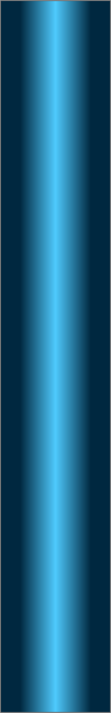
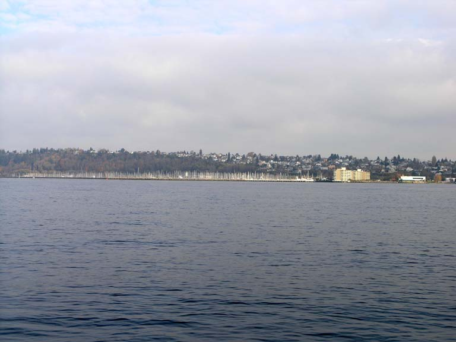
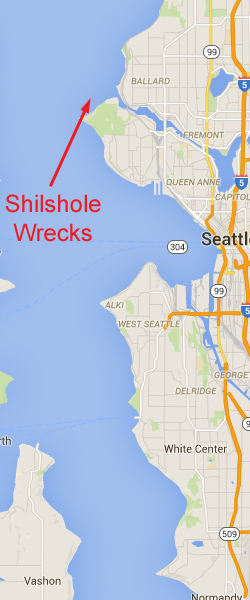
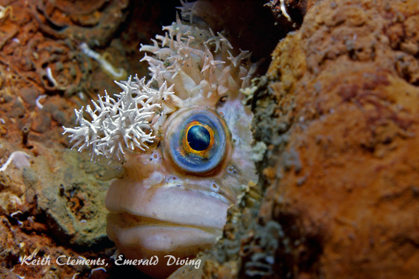
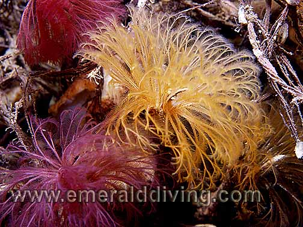

Shilshole Wrecks
Topography: Two sunken steel barges and a sunken tugboat located offshore on a gently sloping and sandy substrate.
Puget Sound marine life rating: 3
Puget Sound structure rating: 3
Diving depths:
Vertical barge: 70 feet
Deep barge: 100 feet
Tugboat: 85 feet
Highlight: How often do you get a chance to wall dive a barge? One barge settled vertically on its side when it sunk.
Skill level: Advanced
GPS coordinates:
N47° 40.433’ W122° 25.355’ (deep barge)
N47° 40.393’ W122° 25.382’ (tugboat)
N47° 40.373’ W122° 25.327’ (vertical barge)
Access by boat: The Shilshole Wrecks are located in the southern reach of Shilshole Bay. West Point is to the southwest of these wrecks. A large white mooring buoy for barges usually marks this site, but is not always present.
These wrecks are in close proximity to the buoy. Finding the wrecks requires hunting around the GPS coordinates with the depth sounder. The tugboat and “deep barge” will show as a sudden 15 to 20 foot change in depth. The “vertical barge” can be trickier to find since it offers a depth sounder a narrow profile resting on its side. I look for the bottom to momentarily jump 40 feet when the crossing over this barge. Running a search pattern for the wrecks is challenging if the wind is blowing and the mooring buoy is absent. When I find the targeted wreck on the depth sounder, I anchor immediately up current or upwind of the wreck and drop anchor.
Shore access: None
Dive Profile: These three wrecks apparently sank while moored to the buoy. The area around the wrecks is sandy and slopes gently.
The 60’ long tugboat (named the “Omar”) lies in about 85 feet of water. Her steel funnel lies amongst the debris from her well decomposed wood superstructure. The decomposing wooden hull still holds its shape, but most of the deck has rotted away. Clearly visible inside the hull is the massive diesel engine that once brought the Omar to life. This wreck lies with a north-south orientation with her bow facing south. She sits upright about 20 yards west of the mooring buoy anchor block. However, keep in mind the mooring buoy can swing on its mooring chain.
The other two wrecks in this area are steel barges. The bow of the “deep barge” rests in about 100 feet of water, while the stern settled at about 90 feet. This barge is intact, upright, and lies in an east-west direction with the bow facing west. This 200 foot long vessel was covered in fishing nets at one time, but a clean-up effort in recent years removed most of the nets from her decks. Although this barge is long, she is only about 40 feet wide. On the north side of the “deep barge” is a massive old engine, which I believe is the last remnants of yet another wreck. The deep barge lies about 100 yards to the north of the Omar.
The 150 foot long “vertical barge” resides in about 70 feet of water and is sitting on her starboard side. Like the Omar, this barge is also oriented in a north-south direction with her pointy bow facing south. The deck of this wreck faces west and towers 40 feet above the substrate. The bottom of the hull on the east side is flat and featureless, but the bow section on the west side offers some steel structure that fish use as cover. The vertical barge is located about 100 yards west of the Omar.
The circular concrete mooring buoy anchor block and some rocks are found between the Omar and the “vertical barge”. One of the rock formations is about 15 feet tall and 20 feet in diameter.
Fellow divers ran lines between these three wrecks. The lines form a triangular pattern. As of the time of this writing, these lines are still in place and make it easy to visit two or even all three wrecks on a single dive. I prefer to limit my dive to two wrecks and take my time to explore and look for interesting creatures. The same divers that ran these lines also made a “diver manikin” that now haunts one of these wrecks. This manikin is outfitted in a wetsuit, hood, fins, and mask. Although they intended to have the 400 pound concrete manikin sitting on a rock, it has fallen over and is now face down near the vertical barge. I can only imagine how unsettling it would be for an approaching and unsuspecting diver to see what looks like a motionless diver face down on the bottom, although the anemones growing on the manikin are a subtle clue that all is not as it might seem.
I like to start my dive on the Omar as I believe she is the most picturesque and interesting of the wrecks. If I anchor correctly, giant plumose anemones lining the hull come into view as I descend the anchor line. If I can’t see the wreck upon decent, I tie a spool to the anchor and sweep the area until I find the wreck. The spool eliminates the possibility of getting disoriented on the flat, featureless bottom. I leave my spool attached to the wreck so I can re-establish the anchor line once I finish exploring. Once I have spent 15 minutes investigating the Omar, and follow one of the lines to a barges. I make certain to return to the Omar before my no-deco time or air supply runs low. The dive profile of all three wrecks is relatively square, although the vertical barge offers the opportunity to ascend to about 40 feet before beginning a free ascent if the anchor line is not acquired at the end of the dive.
My preferred gas mix: EAN 34
Current observations:
Current Station: Admiralty Inlet
Noted Slack Corrections: None
I dive these wrecks at slack or on minor exchanges (less than 0.5 knots at maximum). I generally dive this offshore location with an attended boat.
Boat Launch:
Shilshole Marine ramp (Seattle). Approximately 2 miles from the dive site.
Don Armin (West Seattle). Approximately 7 miles from the dive site.
Facilities: None
Hazards:
Current: Moderate to strong current is present off-slack. Light current is possible at slack.
Depth: All three wrecks are at depths of close to 100 feet and offer divers a relatively square profile. Proper gas management is crucial for safely.
Free ascent: A free ascent from depths as great as 90 feet is required if the anchor line is not re-acquired at the end of the dive.
Offshore location: These wrecks are at least a quarter mile offshore. There is no nearby shore to swim to incase of emergency.
Snagging hazards: Hazards include fishing nets, derelict fishing gear, and other snagging hazards inherent to wood and steel wrecks.
Navigation: Proper compass operation can be affected by the iron in these steel wrecks.
Marine life: These wrecks have done a fantastic job of attracting a multitude of different species to an otherwise barren seascape. All three wrecks sport gorgeous white and orange giant plumose anemones. Rockfish and greenling flock to these sanctuaries. The superstructure of the “Omar” and “vertical barge” are great places to take pictures of copper and quillback rockfish with colorful anemones in the background. Huge schools of perch often take refuge on these wrecks. I occasionally find large decorated warbonnets peering out from the open end of the steel channels that run the length of the deep barge.
The surrounding substrate offers chance encounters with a variety of species, including orange seapens, beautiful sand rose anemones, tube anemones, rock sole, and the occasional giant nudibranch. The biggest spiny red seastars I have seen have been at this site. During winter months, pink nudibranchs invade the surrounding area. I have also noted a solitary white seapen on the south side of the “deep barge”.
Puget Sound marine life rating: 3
Puget Sound structure rating: 3
Diving depths:
Vertical barge: 70 feet
Deep barge: 100 feet
Tugboat: 85 feet
Highlight: How often do you get a chance to wall dive a barge? One barge settled vertically on its side when it sunk.
Skill level: Advanced
GPS coordinates:
N47° 40.433’ W122° 25.355’ (deep barge)
N47° 40.393’ W122° 25.382’ (tugboat)
N47° 40.373’ W122° 25.327’ (vertical barge)
Access by boat: The Shilshole Wrecks are located in the southern reach of Shilshole Bay. West Point is to the southwest of these wrecks. A large white mooring buoy for barges usually marks this site, but is not always present.
These wrecks are in close proximity to the buoy. Finding the wrecks requires hunting around the GPS coordinates with the depth sounder. The tugboat and “deep barge” will show as a sudden 15 to 20 foot change in depth. The “vertical barge” can be trickier to find since it offers a depth sounder a narrow profile resting on its side. I look for the bottom to momentarily jump 40 feet when the crossing over this barge. Running a search pattern for the wrecks is challenging if the wind is blowing and the mooring buoy is absent. When I find the targeted wreck on the depth sounder, I anchor immediately up current or upwind of the wreck and drop anchor.
Shore access: None
Dive Profile: These three wrecks apparently sank while moored to the buoy. The area around the wrecks is sandy and slopes gently.
The 60’ long tugboat (named the “Omar”) lies in about 85 feet of water. Her steel funnel lies amongst the debris from her well decomposed wood superstructure. The decomposing wooden hull still holds its shape, but most of the deck has rotted away. Clearly visible inside the hull is the massive diesel engine that once brought the Omar to life. This wreck lies with a north-south orientation with her bow facing south. She sits upright about 20 yards west of the mooring buoy anchor block. However, keep in mind the mooring buoy can swing on its mooring chain.
The other two wrecks in this area are steel barges. The bow of the “deep barge” rests in about 100 feet of water, while the stern settled at about 90 feet. This barge is intact, upright, and lies in an east-west direction with the bow facing west. This 200 foot long vessel was covered in fishing nets at one time, but a clean-up effort in recent years removed most of the nets from her decks. Although this barge is long, she is only about 40 feet wide. On the north side of the “deep barge” is a massive old engine, which I believe is the last remnants of yet another wreck. The deep barge lies about 100 yards to the north of the Omar.
The 150 foot long “vertical barge” resides in about 70 feet of water and is sitting on her starboard side. Like the Omar, this barge is also oriented in a north-south direction with her pointy bow facing south. The deck of this wreck faces west and towers 40 feet above the substrate. The bottom of the hull on the east side is flat and featureless, but the bow section on the west side offers some steel structure that fish use as cover. The vertical barge is located about 100 yards west of the Omar.
The circular concrete mooring buoy anchor block and some rocks are found between the Omar and the “vertical barge”. One of the rock formations is about 15 feet tall and 20 feet in diameter.
Fellow divers ran lines between these three wrecks. The lines form a triangular pattern. As of the time of this writing, these lines are still in place and make it easy to visit two or even all three wrecks on a single dive. I prefer to limit my dive to two wrecks and take my time to explore and look for interesting creatures. The same divers that ran these lines also made a “diver manikin” that now haunts one of these wrecks. This manikin is outfitted in a wetsuit, hood, fins, and mask. Although they intended to have the 400 pound concrete manikin sitting on a rock, it has fallen over and is now face down near the vertical barge. I can only imagine how unsettling it would be for an approaching and unsuspecting diver to see what looks like a motionless diver face down on the bottom, although the anemones growing on the manikin are a subtle clue that all is not as it might seem.
I like to start my dive on the Omar as I believe she is the most picturesque and interesting of the wrecks. If I anchor correctly, giant plumose anemones lining the hull come into view as I descend the anchor line. If I can’t see the wreck upon decent, I tie a spool to the anchor and sweep the area until I find the wreck. The spool eliminates the possibility of getting disoriented on the flat, featureless bottom. I leave my spool attached to the wreck so I can re-establish the anchor line once I finish exploring. Once I have spent 15 minutes investigating the Omar, and follow one of the lines to a barges. I make certain to return to the Omar before my no-deco time or air supply runs low. The dive profile of all three wrecks is relatively square, although the vertical barge offers the opportunity to ascend to about 40 feet before beginning a free ascent if the anchor line is not acquired at the end of the dive.
My preferred gas mix: EAN 34
Current observations:
Current Station: Admiralty Inlet
Noted Slack Corrections: None
I dive these wrecks at slack or on minor exchanges (less than 0.5 knots at maximum). I generally dive this offshore location with an attended boat.
Boat Launch:
Shilshole Marine ramp (Seattle). Approximately 2 miles from the dive site.
Don Armin (West Seattle). Approximately 7 miles from the dive site.
Facilities: None
Hazards:
Current: Moderate to strong current is present off-slack. Light current is possible at slack.
Depth: All three wrecks are at depths of close to 100 feet and offer divers a relatively square profile. Proper gas management is crucial for safely.
Free ascent: A free ascent from depths as great as 90 feet is required if the anchor line is not re-acquired at the end of the dive.
Offshore location: These wrecks are at least a quarter mile offshore. There is no nearby shore to swim to incase of emergency.
Snagging hazards: Hazards include fishing nets, derelict fishing gear, and other snagging hazards inherent to wood and steel wrecks.
Navigation: Proper compass operation can be affected by the iron in these steel wrecks.
Marine life: These wrecks have done a fantastic job of attracting a multitude of different species to an otherwise barren seascape. All three wrecks sport gorgeous white and orange giant plumose anemones. Rockfish and greenling flock to these sanctuaries. The superstructure of the “Omar” and “vertical barge” are great places to take pictures of copper and quillback rockfish with colorful anemones in the background. Huge schools of perch often take refuge on these wrecks. I occasionally find large decorated warbonnets peering out from the open end of the steel channels that run the length of the deep barge.
The surrounding substrate offers chance encounters with a variety of species, including orange seapens, beautiful sand rose anemones, tube anemones, rock sole, and the occasional giant nudibranch. The biggest spiny red seastars I have seen have been at this site. During winter months, pink nudibranchs invade the surrounding area. I have also noted a solitary white seapen on the south side of the “deep barge”.




Decorated Warboonet
Lingcod
Orange Seapen
Zoanthids
Underwater imagery from this site


Copper Rockfish
Quillback Rockfish

Split Branch Feather Duster Worm
Orange Spotted Nudibranch

Crimson Anemone